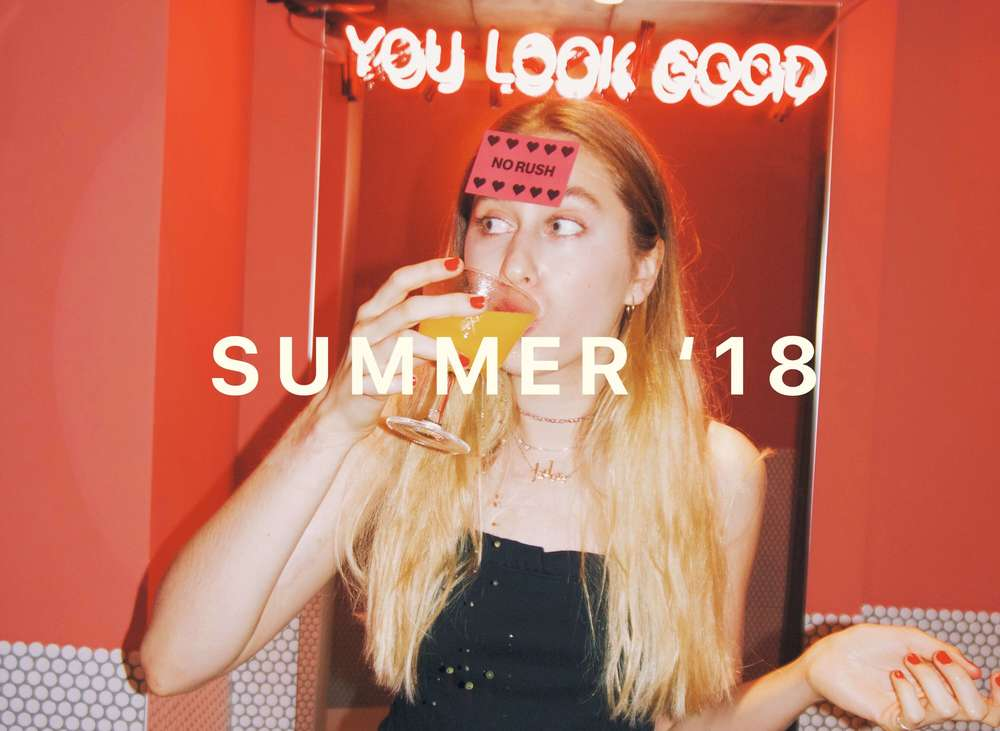
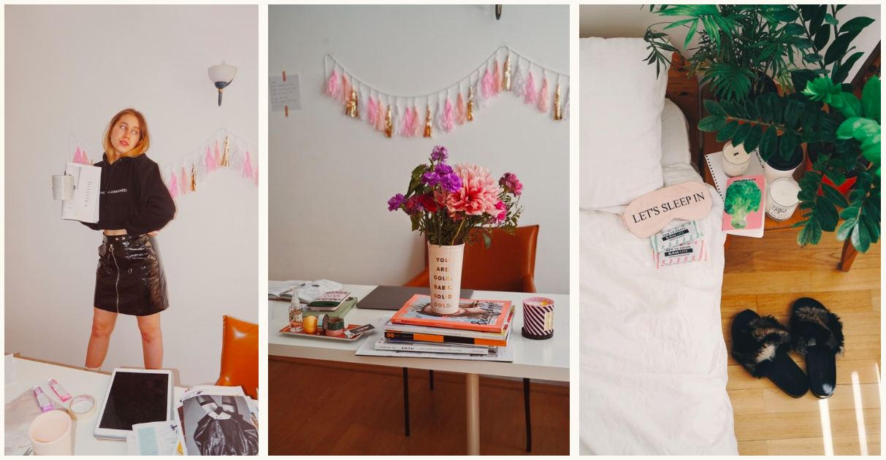
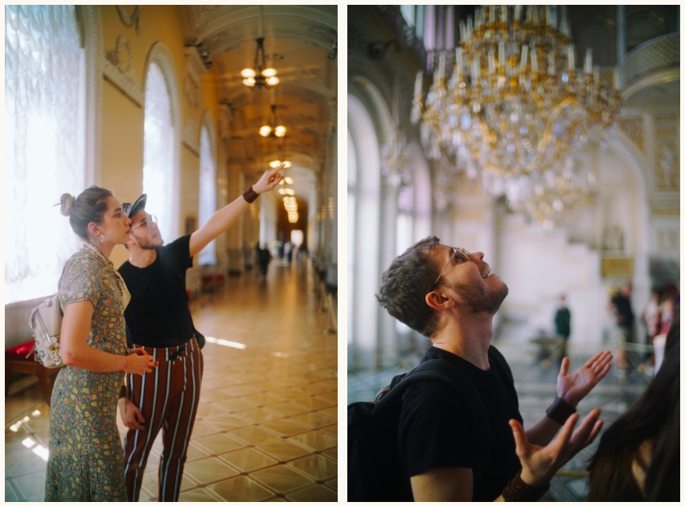
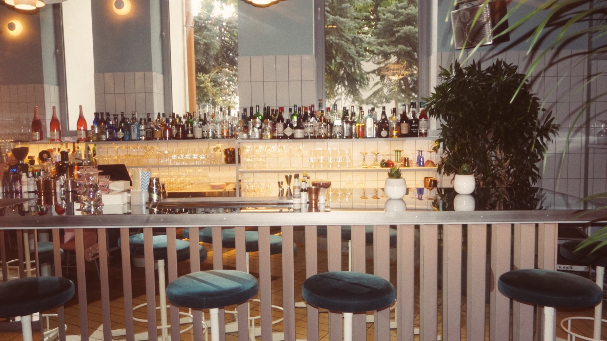
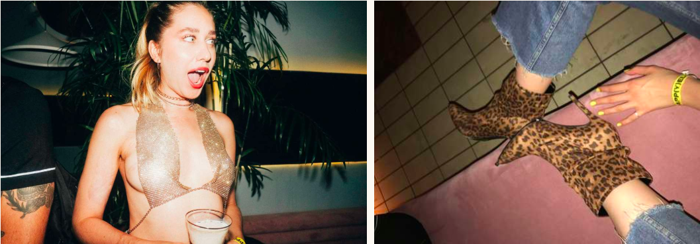

У меня есть правило, которым я обзавелась после жизни в Америке: всегда вербализируй комплименты. Нравится платье девушки, стоящей позади тебя в очереди? Скажи ей об этом! Попробовала потрясающий латте с куркумой в новой кофейне на Покровке? Пришли фотографию с локацией своему другу-кофеману. Нашла продукт, который изменил и облегчил твою жизнь, сделал твою кожу здоровой и сияющей? Сделай об этом пост! Итак, сегодня я хотела показать и рассказать о самых ярких событиях и вещах прошедшего лета 2018 года.
1. Переезд в Новую Квартиру
Мои поиски идеальной квартиры в столице начались примерно за год до самого переезда. И, oh boy, let me tell you, найти достойную квартиру в Москве сложно. Хотите что-то светлое с минимумом мебели, да чтобы не разбиваться в лепешку каждый месяц, оплачивая аренду? Вам за третье кольцо. В центре же вас ждут либо непомерные цены, либо бабушкины ковры, либо соседи. Прошлым августом, когда я приехала на съемки для журнала Glamour, я познакомилась с одним из продюсеров, которая в разговоре за кофе бросила фразу, что одна из соседок в квартире, которую она снимала, выезжает через месяц. "Что за удача!"– подумала я. Адекватные молодые соседки, центр Москвы, приличный ремонт, последний этаж, окна на запад. Что может пойти не так? На деле мало, что шло не так. Да, жить с соседями, когда в тебе отсутствует ген "положи, откуда взял", сложно, но еще до заезда мне был дан срок в три месяца. И за эти три месяца, ежедневно просматривая Циан и Локалс, я не нашла ни одной опции на замену. Потом по еще одной случайности я смогла найти другую квартиру в центре, каждый день продолжая свои поиски "той самой". И вот, в середине лета я переехала в квартиру, в которую влюбилась еще года полтора назад. Квартира, которую я даже не могла себе позволить в день переезда. Я просто пообещала хозяину, что мне понадобится неделя-две на то, чтобы привести свои финансы в порядок и усердно поработать, чтобы стать платежеспособной для моего нового дома. И вуа-ля! Еще одно подтверждение того, насколько важно иметь пространство, которое тебя вдохновляет. Я стала снимать видео каждый день, превратила гостиную в офис, кладовку в склад и отделила жилое пространство от рабочего. Дом стал офисом, а офис – домом.

2. Экскурсия “Модный Петербург”
Всем, кто приезжает в Петербург, я немедля даю контакт Анатоля Вовка и наставление в обязательном порядке побывать на его персональной экскурсии по музеям города (Эрмитаж, разумеется, мало что может побить по "вау" эффекту) или двухчасовом туре под названием "Модный Петербург". Вам знакомо чувство, когда ты смотришь любимый фильм, читаешь книгу, которую ты читал уже десять раз, но каждый раз находишь какие-то новые детали и не перестаешь удивляться тому, насколько удивительное произведение перед тобой находится? Именно так я чувствую себя каждый раз, когда слушаю лекции Анатоля. Кстати, что начиналось с Анатолем как "давай снимем видео про французские слова, которые люди произносят неправильно", выросло в красивую дружбу и нескончаемый поток вдохновения, результат которого вы можете наблюдать на канале в наших коллаборациях.

3. Открытие Happy End в Москве
Именно с переездом в Москву я открыла для себя культуру вечера пятницы. Когда ты надеваешь свое самое блестящее обтягивающее платье, берешь подруг и идешь в бар, где одинаково хорошо подают коктейли и ночной dj-сет. Сперва это был "Симачев" со своей кухней 24 часа и самыми популярными диджеями столицы, затем (незадолго до закрытия) "Клава" с их около нью-йорским стилем бара и диско-музыки.
Happy End стал для меня таким местом, которое я жду каждую неделю (Марианна, которая редактирует этот текст, подтвердит вам это (подтверждаю :)). Цвета, вкусы, запахи и звуки. Happy End – это кухня и бар в Москве, которые были открыты летом в районе Патриарших прудов братьями Иской и Беком Нарзи, за чьими именами уже стоят два моих любимых заведения в Лондоне, вдохновлённых перуанской кухней: Chicama и Pachamama. Я бы сказала, что Happy End – это лайфстайл место, собравшее в себе лучшее от вкуса Перу, стиля Лондона и прогрессивности Москвы.
Поэтому, будет ли это живая музыка в четверг, пятничные танцы или вафли из киноа в воскресенье, я искренне считаю, что каждый, кто ищет счастливый конец после тяжелого дня, продуктивной рабочей недели или утреннего похмелья, welcome to Happy End! Не забудьте свою камеру, потому что ПОВЕРЬТЕ, вам захочется фотографироваться под желтым неоном и с "Беком" в руках.
And by the way, @happyendmoscow – отдельное произведение искусства в моей ленте инстаграма и must-follow для всех, кто хочет получать регуляроное эстетическое наслаждение.

